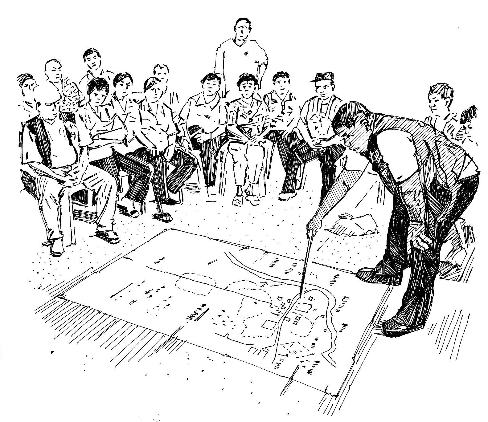

Une carte de la communauté vous permet de faire le lien entre des questions ou problèmes et des lieux particuliers, et facilite la visualisation des informations.
Il est judicieux d’associer les membres de la communauté à l’élaboration de la carte.
Ce type de carte est très utile en cas d’épidémie puisqu’elle vous aide à voir les principaux problèmes et besoins ainsi qu’à identifier les risques.
La carte peut être utilisée pour soutenir les activités de préparation et de planification qui précèdent l’épidémie.
Comment réaliser une carte de la communauté
Dessinez une carte spatiale simple qui montre la communauté avec tous ses principaux points de référence. Vous devriez essayer d’inclure :
l’ensemble de la communauté, les concentrations d’habitants, leurs logements, et qui habite où ;
les principaux lieux de la communauté (école, centre de santé, lieux de culte, sources d’eau, marchés, etc.) ;
une localisation des personnes vulnérables les plus exposées ;
si possible, l’endroit où l’épidémie a commencé et la façon dont elle se propage ;
les dangers et risques pour la santé.
Indiquez sur la carte les cas nouveaux ou faisant l’objet de traitements. Constituez des équipes pour couvrir les zones se trouvant sur la carte. Chaque équipe doit déterminer ce qu’elle peut faire dans son secteur (combien y a-t-il de malades, qui est vulnérable, combien de malades ont été adressés aux autorités sanitaires et toute autre information pertinente). En combinant les cartes des différentes équipes, vous pourrez voir quelles zones de l’épidémie vous couvrez, lesquelles vous ne couvrez peut-être pas et les détails correspondant à chacune des zones. Cela vous aidera à planifier les mesures à prendre.
Les cartes sont souvent plus faciles à comprendre que des longs discours.

Élaboration d’une carte de la communauté
Messages communautaires
Voir les messages de la communauté suivants pour soutenir cartographie communautaire: